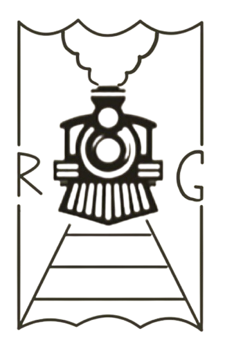

Welcome to Your Gateway for Exploration!
At Constructor University, we believe that education extends far beyond the classroom. Our platform is designed to inspire students to explore the incredible destinations surrounding our university using the convenient and cost-free semester ticket. Whether you're craving the cultural vibrancy of nearby cities or the serene beauty of nature, we are here to guide you through exciting travel opportunities within the region.
Use our interactive map to discover the best places to visit. From historic landmarks and scenic parks to local eateries and cultural hotspots, we've curated a selection of destinations to make your weekends and free time truly unforgettable. Whether you're looking for daytime activities or late-night adventures, we've got you covered.
Explore the top spots for nightlife, including clubs and evening events, or unwind during the day by visiting tranquil parks, fascinating museums, and iconic monuments. And for the food lovers, discover diverse dining options that reflect the local culture and enrich your travel experience.